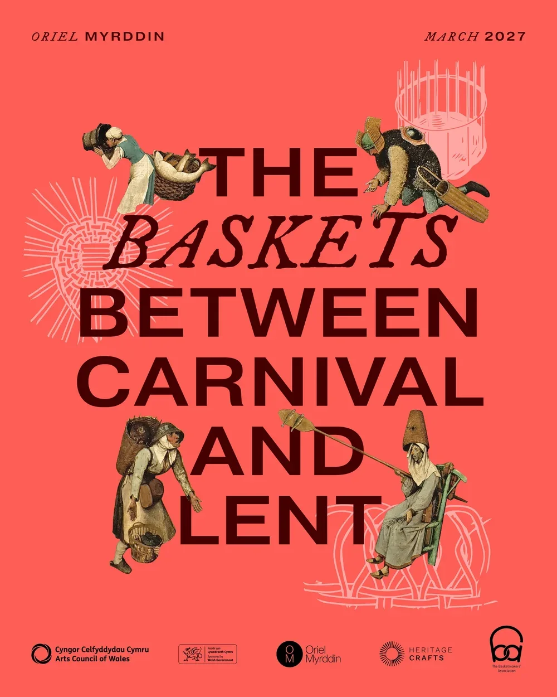
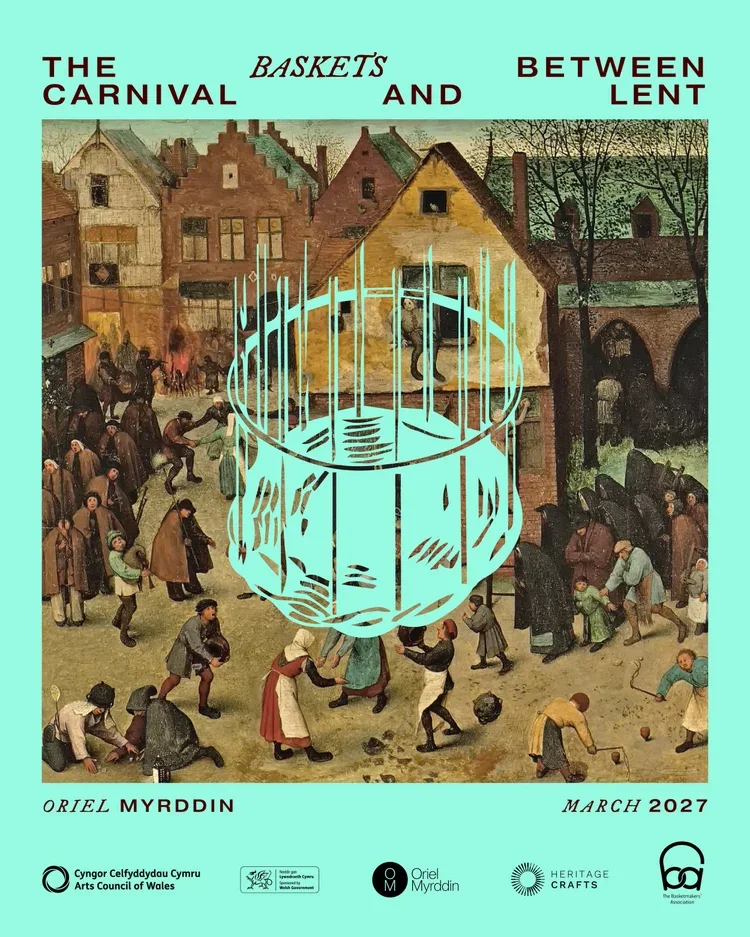
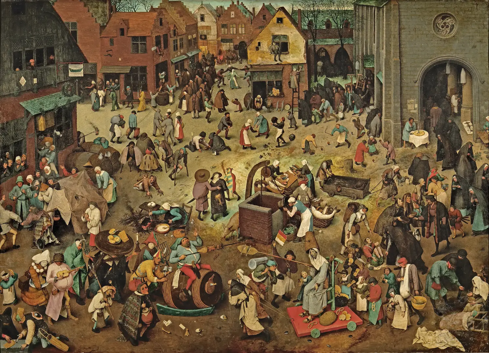
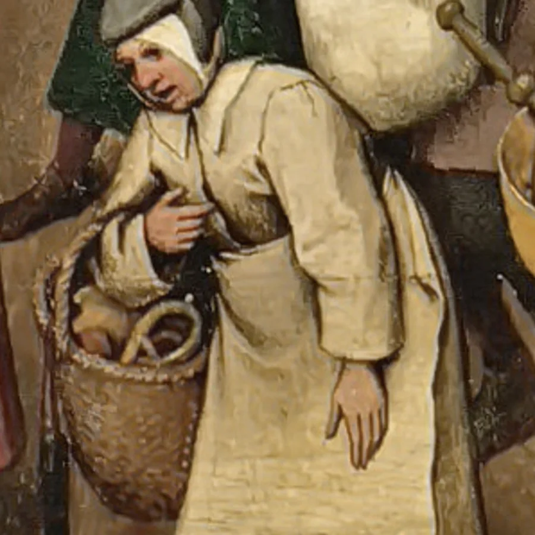
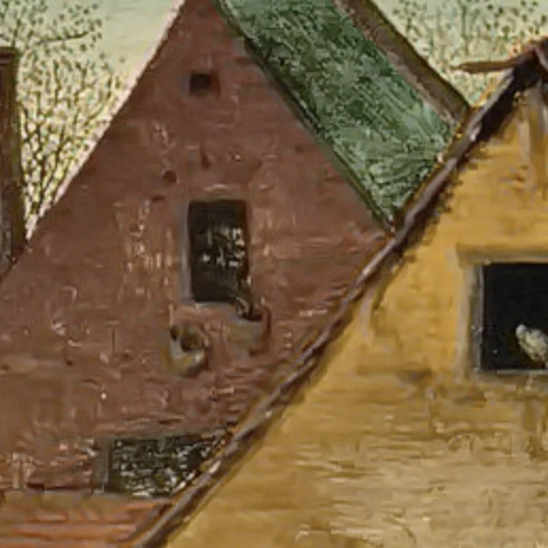

The Baskets Between Carnival and Lent
Eleven basketmakers from across Europe are reinterpreting and recreating all twenty-four baskets painted into Pieter Bruegel the Elder’s The Fight Between Carnival and Lent (1559). The project is curated by Lewis Prosser and is in development for exhibition at Oriel Myrddin, March to June 2027, through a combination of craft, music and performance.
The project asks how baskets, often overlooked as everyday objects, are in fact a unifying part of human life, and how, through observing functional crafts, we might better understand communities across time and culture.
I am making two of the twenty-four: the nun’s basket, carried at the hip with pretzels in it, and a small basket hanging in a window above the square. I am posting the making on Instagram.
- Role
- One of eleven basketmakers
- Curated by
- Lewis Prosser
- Exhibition
- Oriel Myrddin, March–June 2027


